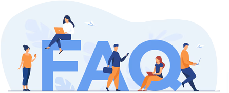

Frequently Asked Questions
eSushrut@Clinic is a visionary, state-of-the-art,
and interconnected/HMS that
offers
valuable, actionable,
and tailored data to a wide range of healthcare facilities.
General Information
eSushrut@Clinic is a cloud-based Health Management Information System (HMIS) designed for clinics, offering services such as patient registration, prescription management, clinical record keeping, and secure data exchange.
It digitizes healthcare processes in clinics, allowing practitioners to manage appointments, prescriptions, lab results, and patient records. The system supports both online and offline functionalities for seamless clinic operations.
Yes, eSushrut@Clinic is fully integrated with ABDM, supporting ABHA creation, secure sharing of health records, and linking with the national health registry.
The system is designed for healthcare professionals, including general practitioners, specialists, and clinic administrators. It can also be used by allied health workers and staff for administrative tasks.
Yes, as a SaaS-based platform, eSushrut@Clinic is accessible from any location with an internet connection, whether on desktop, tablet, or mobile devices.
No, eSushrut@Clinic is designed for managing regular clinic operations, not emergency services. For emergencies, patients are advised to visit a hospital.
Appointments & Consultations
Appointments can be booked through the Patient Registration module. Clinicians or staff can set up appointment slots, and patients can book through the clinic or an online interface.
Yes, the system supports multi-facility management, allowing you to handle appointments and consultations across different locations through a centralized dashboard.
Patients receive notifications via SMS or email with details about their scheduled appointments. Reminders are also sent closer to the appointment time.
Yes, follow-up appointments can be scheduled through the system, and they will be linked to the patient's medical history for easy reference.
Digital Prescriptions & Health Records
After a consultation, clinicians can generate a digital prescription, which is stored in the patient’s records and can be printed or shared electronically with pharmacies.
Yes, digital prescriptions generated through eSushrut@Clinic are legally valid and can be used for purchasing medications at pharmacies.
Health records can be accessed through the Patient Management module. Clinicians can view previous consultations, lab reports, prescriptions, and other health information.
Yes, patients can access their health records by linking their ABHA (Ayushman Bharat Health Account) with the clinic. They can retrieve their data through the ABDM platform or related apps.
You can share health records by obtaining patient consent through the system. Once consent is granted, records can be securely shared with the patient or another healthcare provider.
If consent is denied, the records will not be shared. This decision is recorded in the system for future reference.
ABHA (Ayushman Bharat Health Account) & Consent Management
ABHA numbers can be created during patient registration through Aadhaar verification. The system supports both OTP-based and demographic verification methods.
During registration or consultation, you can link the patient’s ABHA with their records by entering the ABHA number and completing the consent process.
Consent for sharing health records is managed through a consent request sent to the patient’s mobile device via the ABHA app. Patients can approve or deny the request, and their choice is recorded in the system.
Yes, patients can revoke their consent through the ABHA app, and the system will be updated accordingly.
User Management & Registration
Patients can be registered by entering their personal details (name, age, contact, etc.) in the Patient Registration module. After registration, a unique Case Record (CR) Number is generated for future reference.
Yes, the User Management module allows administrators to create and manage roles for staff members, assigning access to various modules based on their responsibilities.
Yes, eSushrut@Clinic supports multi-facility operations, allowing you to manage staff, patients, and records for multiple clinics from a single account.
Payments & Billing
eSushrut@Clinic includes a billing module where you can generate invoices for consultations, lab tests, and other services. Payments can be tracked, and receipts are automatically generated.
Payments for services can be made via credit/debit cards, UPI, net banking, or digital wallets.
Yes, detailed billing reports for financial auditing and clinic management can be generated from the system.
Technical Support & Troubleshooting
For any technical issues, you can contact the eSushrut support team through the user dashboard or submit a support ticket. Detailed descriptions of the issue will help in resolving the problem quickly.
If you forget your login credentials, you can reset them using the “Forgot Password” option. A password reset link will be sent to your registered email or mobile number.
In case of system crashes, first try refreshing the page or restarting the application. If the issue persists, contact the support team for assistance.
Privacy & Security
eSushrut@Clinic follows strict data privacy protocols in compliance with ABDM standards. All health data is encrypted, and access is limited to authorized personnel only.
Yes, all data is securely stored in cloud servers with multiple layers of security to prevent unauthorized access.
Yes, only authorized users (such as clinicians or designated staff) can access patient records. Permissions can be managed through the User Management module.
Telemedicine Services
Yes, eSushrut@Clinic supports video and audio consultations, allowing you to provide remote healthcare services to your patients.
Clinicians can schedule and conduct telemedicine consultations through the platform, with secure video or audio communication. Patients can join the session using a link provided via email or SMS.
All telemedicine sessions are encrypted and conducted through secure channels, ensuring privacy and data protection for both clinicians and patients.